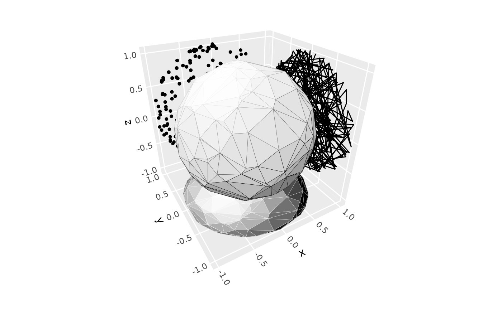
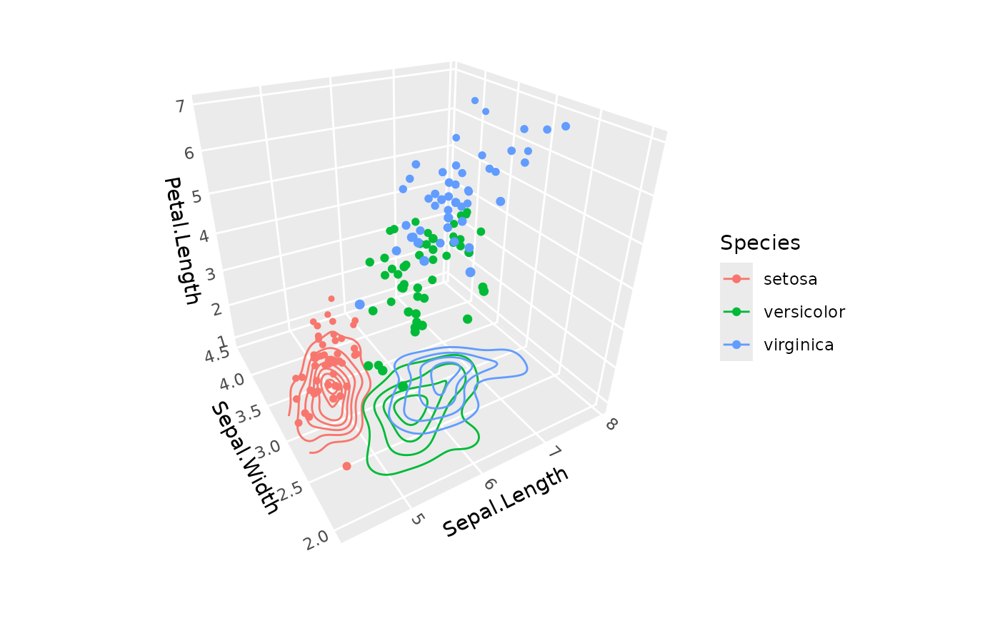
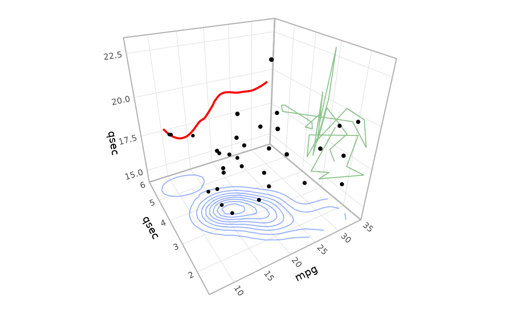
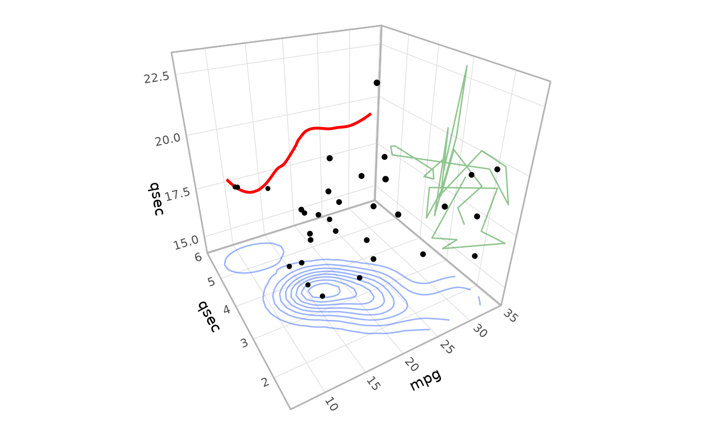

Position for projecting 2D and 3D layers onto 3D cube faces
Source:R/position-on-face.R
position_on_face.Rdposition_on_face() enables layers to be projected onto 2D faces of the 3D
coordinate cube. It can be used to flatten 3D ggcube layers onto a single
cube face as a way of visualizing them in 2D, or to add natively 2D ggplot2
layers like geom_density_2d() or geom_smooth() to a cube face.
Arguments
- faces
Character string or vector specifying which cube face(s) to project onto. Valid options are: "xmin", "xmax", "ymin", "ymax", "zmin", "zmax", "3D". "3D" indicates the raw, non-flattened 3D position. Multiple faces and "3D" are only supported for 3D layers (when
axes = NULL).- axes
For 2D layers only: Character vector of length 2 specifying which 3D dimensions the 2D layer's x and y aesthetics represent. For example,
c("x", "z")means the 2D x-axis maps to the 3D x-axis and the 2D y-axis maps to the 3D z-axis. For 3D layers, useNULL(default) to preserve the existing x,y,z mapping.
Details
This position adjustment supports both 2D and 3D layers:
For 3D layers (axes = NULL):
Data already has x,y,z coordinates in the correct order
Simply adds projection metadata for coord_3d to place the layer on the specified face(s)
The face coordinate will be overridden during coordinate transformation
Multiple faces are supported - the layer will be duplicated on each specified face. All specified faces inherit aesthetics from the layer function; if you want different parameters for different faces and on the primary 3D layer, add each as a separate layer call.
For 2D layers (axes = c("dim1", "dim2")):
Renames the layer's x,y columns to match the specified 3D axes
Adds the missing third dimension
Adds projection metadata for coord_3d
Only single faces are supported for 2D layers
The actual projection happens during coordinate transformation in coord_3d.
Compatibility Note: This position adjustment is not compatible with all 2D stats.
It works well with stat_density_2d() and other
stats that don't depend heavily on scale ranges during computation, but may cause
errors or rendering issues with stat_density_2d_filled() and similar stats that
generate polygons based on scale domains, as well as with layers like stat_bin_2d()
that return position variables other than x and y. For geom_smooth(), this position
works only if you set se = FALSE as shown in the example.
See also
coord_3d() for 3D coordinate systems, stat_density_2d() and other
2D statistical transformations that can be projected onto faces.
Examples
# 3D point layer in raw 3D form, and projected onto 2D face
ggplot(sphere_points, aes(x, y, z)) +
geom_point_3d(position = position_on_face("zmin"), color = "red") +
geom_point_3d(color = "black") + # add this layer last so it appears on top
coord_3d()
# 3D layer projected to multiple faces
set.seed(1)
d <- data.frame(x = round(rnorm(10)), y = round(rnorm(10)), z = round(rnorm(10)))
ggplot(d, aes(x, y, z)) +
stat_voxel_3d(color = "black", fill = "steelblue",
light = lighting(blend = "fill", direction = c(1, 1, 0), blend_mode = "hsl"),
position = position_on_face(c("3D", "zmin", "xmax", "ymin"))) +
coord_3d()

# 3D layer projected differently on individual faces
ggplot(sphere_points, aes(x, y, z)) +
stat_hull_3d(position = position_on_face("zmin"), fill = "black") +
geom_point_3d(position = position_on_face("ymin")) +
geom_path(position = position_on_face("xmax")) +
stat_hull_3d(color = "black") +
coord_3d()

# 2D density contour on a specific face
ggplot(iris, aes(Sepal.Length, Sepal.Width, Petal.Length, color = Species)) +
stat_density_2d(position = position_on_face(faces = "zmin", axes = c("x", "y"))) +
geom_point_3d() +
coord_3d()
#> Warning: The following aesthetics were dropped during statistical transformation: z.
#> ℹ This can happen when ggplot fails to infer the correct grouping structure in
#> the data.
#> ℹ Did you forget to specify a `group` aesthetic or to convert a numerical
#> variable into a factor?
 # Distinct 2D layers projected to different faces
ggplot(mtcars) +
geom_smooth(aes(mpg, qsec), color = "red", alpha = .5, se = FALSE,
position = position_on_face(faces = "ymin", axes = c("x", "z"))) +
geom_density_2d(aes(mpg, wt), alpha = .5,
position = position_on_face(faces = "zmin", axes = c("x", "y"))) +
geom_path(aes(wt, qsec), color = "forestgreen", alpha = .5,
position = position_on_face(faces = "xmax", axes = c("y", "z"))) +
geom_point_3d(aes(mpg, wt, qsec)) +
coord_3d() +
theme_light()
#> `geom_smooth()` using method = 'loess' and formula = 'y ~ x'

# Distinct 2D layers projected to different faces
ggplot(mtcars) +
geom_smooth(aes(mpg, qsec), color = "red", alpha = .5, se = FALSE,
position = position_on_face(faces = "ymin", axes = c("x", "z"))) +
geom_density_2d(aes(mpg, wt), alpha = .5,
position = position_on_face(faces = "zmin", axes = c("x", "y"))) +
geom_path(aes(wt, qsec), color = "forestgreen", alpha = .5,
position = position_on_face(faces = "xmax", axes = c("y", "z"))) +
geom_point_3d(aes(mpg, wt, qsec)) +
coord_3d() +
theme_light()
#> `geom_smooth()` using method = 'loess' and formula = 'y ~ x'
